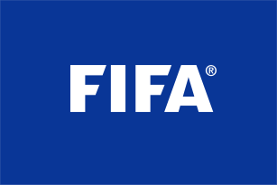

A FIFA foi fundada em 21 de maio de 1904, em Paris, pelas federações da
Bélgica, Dinamarca, Espanha, França, Holanda, Suécia e Suíça.
Atualmente, sua sede fica em Zurique, na Suíça.
Resultado de imagem para fifa história jogo
FIFA, também conhecido como
FIFA Football ou FIFA Soccer, foi lançado originalmente com o título FIFA International Soccer em 15 de julho de 1993.
O título quando chegou para os fãs de futebol foi um dos mais notáveis, pois não
tinha apenas o FIFA em seu nome, mas trazia junto a licença de vários times mundiais.
®
FIFA®